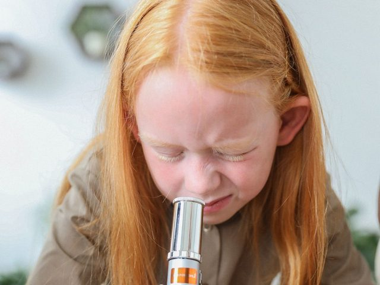
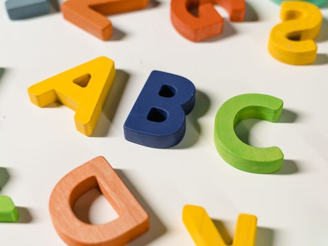
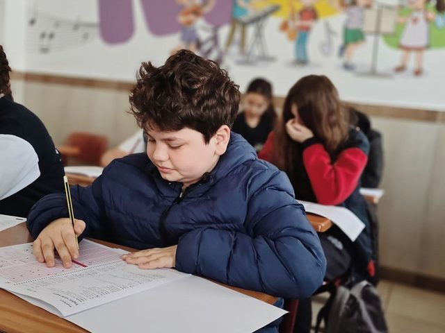
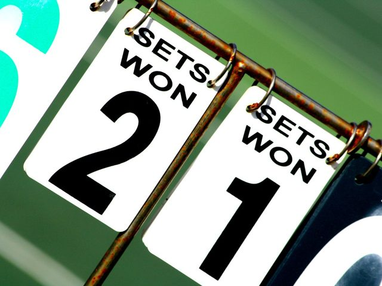
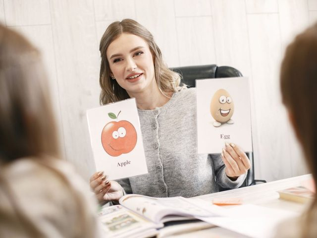

UNIT 16 · VOCABULARY
學校
School
37 個單字聽・唸・用
本單元單字一覽
學校的種類、人、文具、科目、上課用語和考試，共 37 個。科目（biology、physics、law）不可數；physics 雖然有 s，仍當單數。
collegekindergartenuniversitycampusguardboardcrayondiaryinkmagazinepencil boxsheettextbookbackpackgeographybiologychemistryphysicslawsocial sciencecheerleaderclass leaderprincipalbehavepronouncepunishreviewunderlinealphabetconversationexamfinalpoemrecordscorevocabularysemester
每個字都有 🔊，先聽發音、跟著唸，再看例句。
單字 1–4

college
大學；學院n.
My sister is a college student.
我姊姊是大學生。
我姊姊是大學生。

kindergarten
幼稚園n.
My little brother goes to kindergarten.
我弟弟上幼稚園。
我弟弟上幼稚園。
university
大學n.
She studies at National Taiwan University.
她在台灣大學讀書。
她在台灣大學讀書。
campus
校園n.
There is a big library on campus.
校園裡有一間大圖書館。
校園裡有一間大圖書館。
單字 5–8

guard
警衛；守衛n.
The guard opens the school gate at 7 a.m.
警衛早上七點開校門。
警衛早上七點開校門。

board
板；黑板；布告欄n.
The teacher wrote the date on the board.
老師在黑板上寫日期。
老師在黑板上寫日期。

crayon
蠟筆n.
The kids drew pictures with crayons.
孩子們用蠟筆畫畫。
孩子們用蠟筆畫畫。
diary
日記n.
I keep a diary in English.
我用英文寫日記。
我用英文寫日記。
單字 9–12

ink
墨水n.
The printer is out of ink.
印表機沒墨水了。
印表機沒墨水了。

magazine
雜誌n.
I read a science magazine every month.
我每個月讀一本科學雜誌。
我每個月讀一本科學雜誌。

pencil box
鉛筆盒n.
My pencil box is full of colored pens.
我的鉛筆盒裝滿了彩色筆。
我的鉛筆盒裝滿了彩色筆。
sheet
床單；一張（紙）n.
Take out a sheet of paper for the quiz.
拿出一張紙來小考。
拿出一張紙來小考。
單字 13–16

textbook
教科書；課本n.
Open your textbook to page 20.
把課本翻到第 20 頁。
把課本翻到第 20 頁。

backpack
背包；書包n.
Don't forget your lunch in your backpack.
別忘了書包裡的午餐。
別忘了書包裡的午餐。
geography
地理n.
In geography class, we learn about maps.
地理課我們學看地圖。
地理課我們學看地圖。

biology
生物（學）n.
We studied plants in biology class.
我們在生物課研究植物。
我們在生物課研究植物。
單字 17–20

chemistry
化學n.
Be careful in the chemistry lab.
在化學實驗室要小心。
在化學實驗室要小心。

physics
物理n.
Physics is hard but interesting.
物理很難但很有趣。
物理很難但很有趣。

law
法律n.
My cousin studies law at university.
我表哥在大學讀法律。
我表哥在大學讀法律。

social science
社會科學n.
History and geography are parts of social science.
歷史和地理都屬於社會科學。
歷史和地理都屬於社會科學。
單字 21–24

cheerleader
啦啦隊員n.
The cheerleaders danced at the basketball game.
啦啦隊員在籃球賽上跳舞。
啦啦隊員在籃球賽上跳舞。

class leader
班長n.
Tom is our class leader this semester.
Tom 是我們這學期的班長。
Tom 是我們這學期的班長。
principal
校長n.
The principal gave a speech on the first day of school.
開學第一天校長致詞。
開學第一天校長致詞。

behave
表現；守規矩v.
Please behave yourself in the museum.
在博物館裡請守規矩。
在博物館裡請守規矩。
單字 25–28
🗣️
pronounce
發音；唸v.
How do you pronounce this word?
這個字怎麼唸？
這個字怎麼唸？

punish
處罰v.
The teacher punished him for cheating.
老師因為他作弊處罰他。
老師因為他作弊處罰他。

review
複習；評論v. / n.
Let's review Lesson 3 before the test.
考試前我們來複習第三課。
考試前我們來複習第三課。

underline
在…下面畫線v.
Underline the important words.
把重要的字畫底線。
把重要的字畫底線。
單字 29–32

alphabet
字母表n.
There are 26 letters in the English alphabet.
英文字母有 26 個。
英文字母有 26 個。

conversation
對話；談話n.
We practiced a conversation in pairs.
我們兩兩一組練習對話。
我們兩兩一組練習對話。

exam
考試n.
I have a math exam tomorrow.
我明天有數學考試。
我明天有數學考試。

final
最後的；期末考adj. / n.
This is the final question.
這是最後一題。
這是最後一題。
單字 33–36

poem
詩n.
We read a poem about the moon.
我們讀了一首關於月亮的詩。
我們讀了一首關於月亮的詩。

record
記錄；錄音；紀錄v. / n.
He broke the school record in the 100-meter race.
他打破了學校 100 公尺的紀錄。
他打破了學校 100 公尺的紀錄。

score
分數；得分n.
I got a good score on the English test.
我英文考試得了好成績。
我英文考試得了好成績。

vocabulary
字彙；詞彙n.
Reading helps you build your vocabulary.
閱讀幫你增加字彙量。
閱讀幫你增加字彙量。
單字 37–37

semester
學期n.
The new semester starts in September.
新學期九月開始。
新學期九月開始。
學校的種類
| 學校 | 英文 |
|---|---|
| 幼稚園 | kindergarten |
| 國小 | elementary school |
| 國中 | junior high school |
| 高中 | senior high school |
| 大學 | university／college |
a university（u 開頭但讀 [ju]，所以用 a）。
科目
| 科目 | 英文 |
|---|---|
| 地理 | geography |
| 生物 | biology |
| 化學 | chemistry |
| 物理 | physics |
| 法律 | law |
科目不可數，前面不加 a；physics 字尾有 s 但當單數用。
快問快答：中文 → 英文
1大學；學院college
2大學university
3警衛；守衛guard
4蠟筆crayon
5墨水ink
6鉛筆盒pencil box
7教科書；課本textbook
8地理geography
快問快答：英文 → 中文
1chemistry化學
2law法律
3cheerleader啦啦隊員
4principal校長
5pronounce發音；唸
6review複習；評論
7alphabet字母表
8exam考試
學完了！接下來
複習方法
review
- 回到「📗 單字卡」，按「遮中文」自己考自己
- 再按「遮英文」，看中文說出英文
- 每個例句跟著 🔊 唸一次
準備好了
- 按右上角「📝 前往測驗」
- 測驗錯的題目要訂正到全對
- 訂正完成補送 1 點